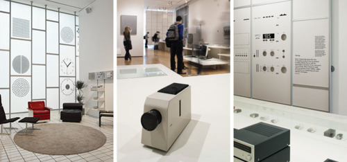

Sat, 10 Mar 2012 12:09:00 · design · berlin · germany · dieterram · braun · apple
Since I'm Berlin...
I thought it might be appropriate to celebrate one of Germany’s most prolific designer, Dieter Ram, and the fact that I always in love with his brilliant design. Ram is renowned for both his distinguish approach in industrial design, mainly associated with Braun, and as the thought leader in Functionalist school of industrial design.

As a tribute to his exemplary design, that serves as source of inspiration for companies like Apple (yes, who did you think inspire Steve Jobs?), here’s Dieter Ram's TEN Principle of ‘Good Design’.
In a nutshell, a Good Design…
- is innovative - The possibilities for innovation are not, by any means, exhausted. Technological development is always offering new opportunities for innovative design. But innovative design always develops in tandem with innovative technology, and can never be an end in itself.
- Makes a product useful - A product is bought to be used. It has to satisfy certain criteria, not only functional, but also psychological and aesthetic. Good design emphasizes the usefulness of a product whilst disregarding anything that could possibly detract from it.
- is aesthetic - The aesthetic quality of a product is integral to its usefulness because products are used every day and have an effect on people and their well-being. Only well-executed objects can be beautiful.
- Makes a product understandable - It clarifies the product’s structure. Better still, it can make the product clearly express its function by making use of the user’s intuition. At best, it is self-explanatory.
- is unobtrusive - Products fulfilling a purpose are like tools. They are neither decorative objects nor works of art. Their design should therefore be both neutral and restrained, to leave room for the user’s self-expression.
- is honest - It does not make a product more innovative, powerful or valuable than it really is. It does not attempt to manipulate the consumer with promises that cannot be kept.
- is long-lasting - It avoids being fashionable and therefore never appears antiquated. Unlike fashionable design, it lasts many years – even in today’s throwaway society.
- is thorough down to the last detail - Nothing must be arbitrary or left to chance. Care and accuracy in the design process show respect towards the consumer.
- is environmentally friendly - Design makes an important contribution to the preservation of the environment. It conserves resources and minimizes physical and visual pollution throughout the lifecycle of the product.
and last, but not least…
- is a little design as possible - Less, but better – because it concentrates on the essential aspects, and the products are not burdened with non-essentials. Back to purity, back to simplicity.
•••
Intrigued to learn more about Dieter Ram? Check out the Less and More: Dieter Ram exhibition, and his recent book As Little Design As Possible.